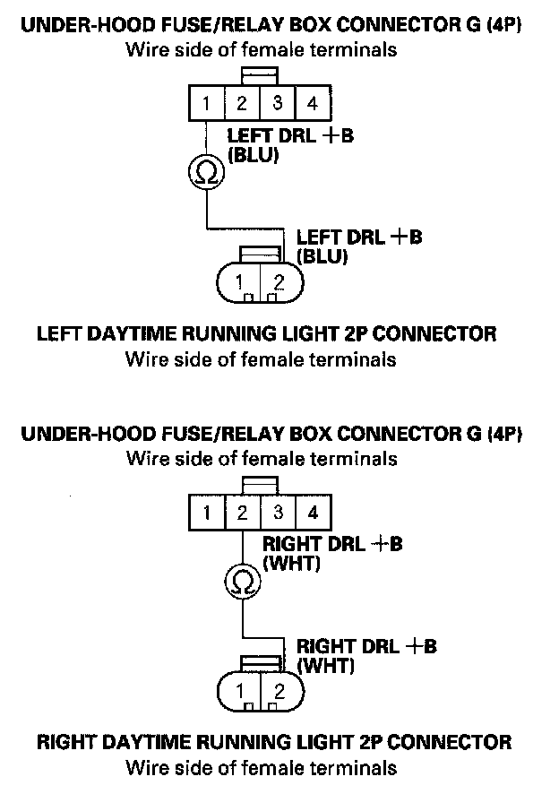
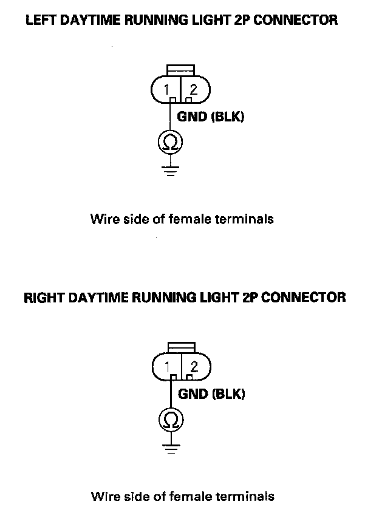

B1079
DTC B1078: Daytime Running Lights System Error (Canada)DTC B1079: Daytime Running Lights System Error (USA)
NOTE: If you are troubleshooting multiple DTCs, be sure to follow the instructions in B-CAN System Diagnosis Test Mode A.
1. Turn the headlight switch OFF, and apply the parking brake.
2. Turn the ignition switch ON (II).
3. Clear the DTCs with the HDS.
4. Release the parking brake.
5. Turn the ignition switch OFF, and then back ON (II).
6. Check for DTCs with the HDS.
Is DTC B1078 or B1079 indicated?
YES - Go to step 7.
NO - Intermittent failure, the system is OK at this time. Check for loose or poor connections.
7. Turn the ignition and headlight switches OFF.
8. Check the No. 1 (10 A) and No. 2 (10 A) fuses in the under-hood fuse/relay box.
Are the fuses OK?
YES - Go to step 9.
NO - Replace the blown fuse and recheck. If the fuse blows again, repair short in the wire between the under-hood fuse/relay box and the appropriate daytime running lights.
9. Check the daytime running light bulbs.
Are the daytime running light bulbs OK?
YES - Go to step 10.
NO - Replace the faulty bulb.
10. Disconnect the under-hood fuse/relay box connector G (4P).
11. Disconnect the each daytime running light 2P connector.

12. Check for continuity between the each daytime running light 2P connector No. 2 terminal and the under-hood fuse/relay box connector G (4P) No. 1 and No. 2 terminals respectively.
Is there continuity?
YES - Go to step 13.
NO - Repair open in the wire.

13. Check for continuity between the No. 1 terminal of each daytime running light 2P connector and body ground.
Is there continuity?
YES - Replace the relay control module.
NO - Repair open in the BLK wire or poor ground (G201-right side, G301-left side).